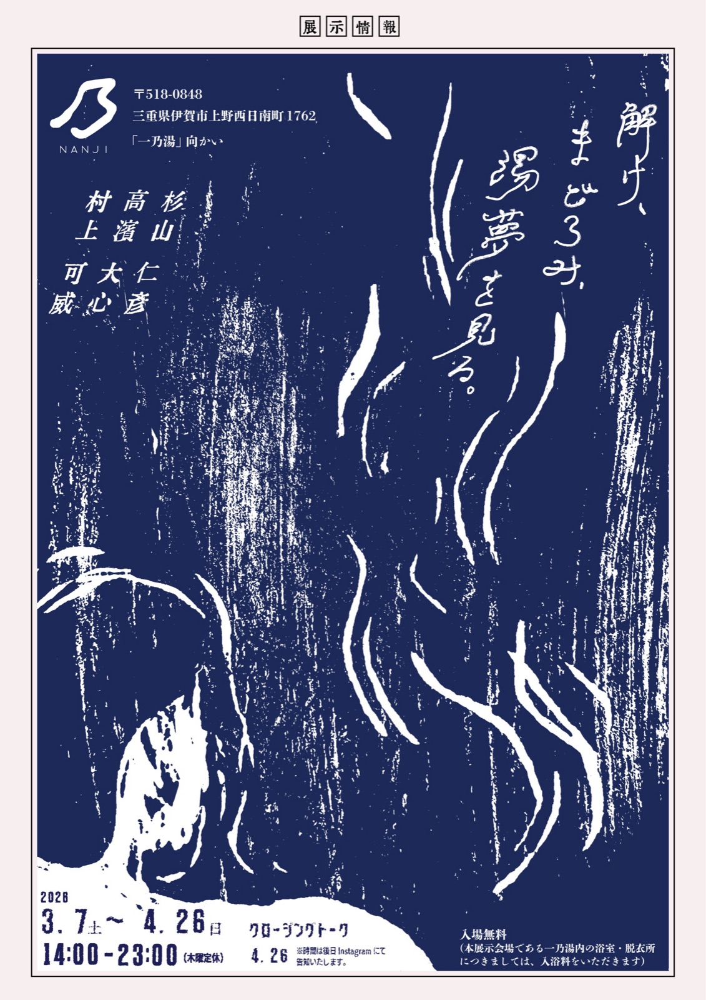
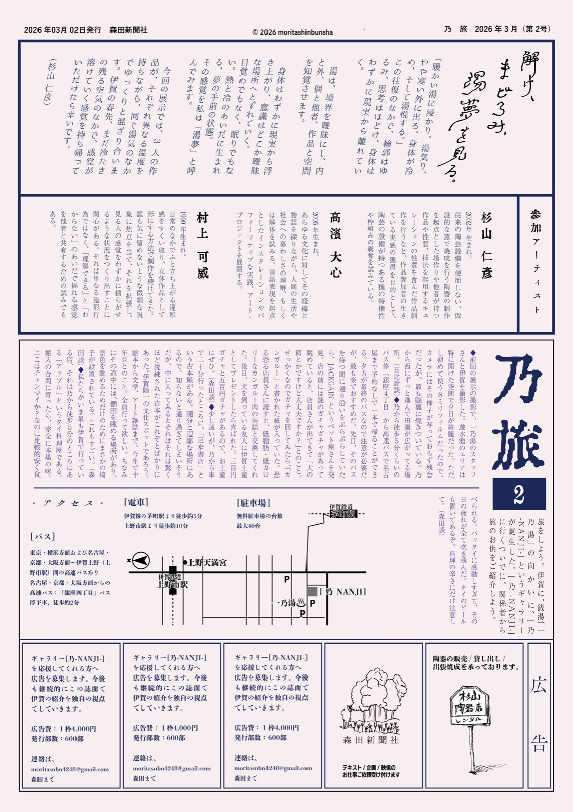
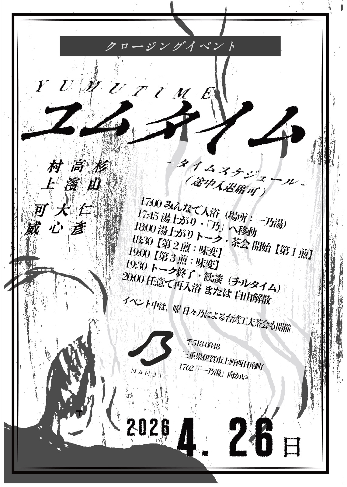

＊会期延長 2026.03.07 (土) – 05.31 (日) ／ 木曜定休 ／ 14:00 – 23:00 入場無料
解け、まどろみ、湯夢を見る。
「暖かい湯に浸かり、湯気り、やや寒い外に出る。身体が冷め、そして湯悦する。」
この往復のなかで、輪郭はゆるみ、思考はほどけ、身体はわずかに現実から離れていく。
湯は、境界を曖昧にし、内と外、個と他者、作品と空間を知覚させます。
身体はわずかに現実から浮き上がり、意識はどこか曖昧な場所へとずれていく。
目覚めでもなく、眠りでもない。熱と冷のあいだに生まれる、夢の手前の状態。
その感覚を私は「湯夢」と呼んでみます。
今回の展示では、3人の作品が、それぞれ異なる温度を持ちながら、同じ湯気のなかでゆっくりと混ざり合います。伊賀の春先、まだ冷たさの残る空気のなかで、感覚が溶けていく感覚を持ち帰っていただけたら幸いです。
— 杉山 仁彦
展示素材


